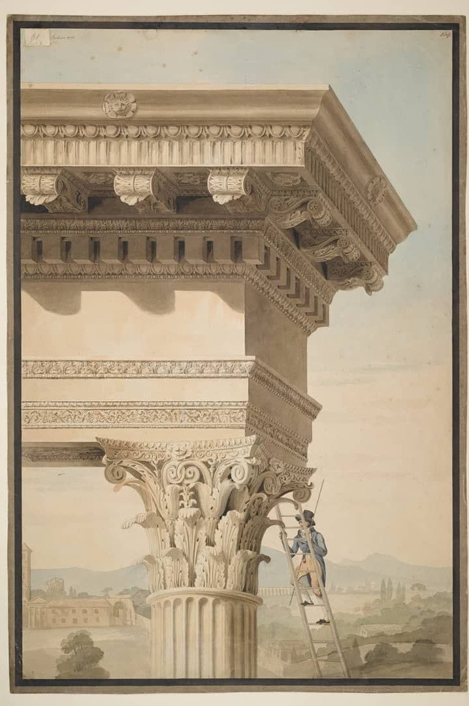
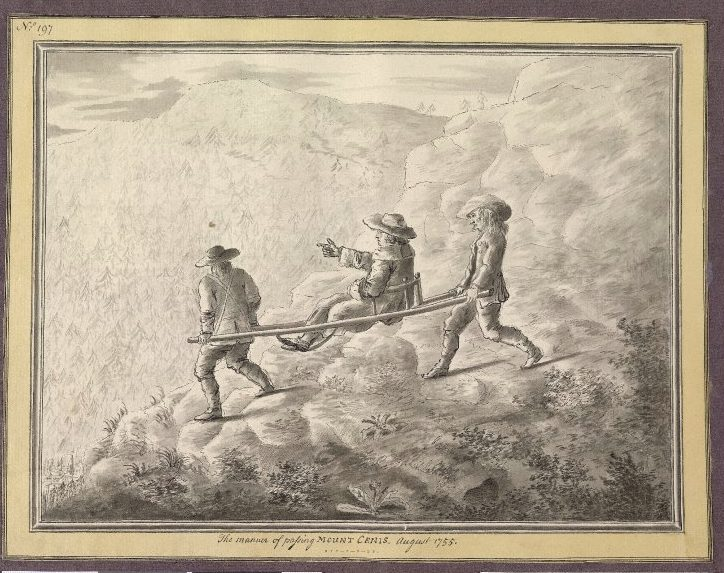

Introducción
Viajar ha formado parte de la educación del arquitecto desde mucho antes de que existieran las escuelas de arquitectura. Entre los siglos XVII y XVIII, el Grand Tour institucionalizó entre las élites europeas un largo viaje de formación hacia Italia que funcionaba como un rito de paso a la vida adulta; en el caso de los arquitectos, ese recorrido se convirtió además en una etapa casi obligada de su aprendizaje profesional. Aunque aquella institución desapareció como tal, la convicción de que la arquitectura ha de conocerse en persona ha sobrevivido hasta hoy en los viajes de estudios, las becas, las estancias de investigación o los programas de movilidad de las escuelas de todo el mundo.
Este trabajo estudia esa continuidad a través de lo que denomina viaje iniciático: un viaje deliberadamente buscado, que marca un umbral en la trayectoria del arquitecto —un antes y un después en su manera de mirar— y cuyas lecciones pueden rastrearse en su obra posterior. El concepto, que se define con detalle en la contextualización general, permite comparar viajes muy distintos en su forma y en su época sin limitarlos a los realizados en la juventud o al término de los estudios.
Para ordenar esa evolución, el trabajo parte de la clasificación del viaje arquitectónico propuesta por Gonçalves Diez y la adapta en cinco tipos de viaje —clásico, romántico, moderno, vernáculo y contemporáneo—, cada uno ligado al contexto histórico y artístico en el que surge, aunque no limitado a él. Para cada tipo se analiza un caso de estudio representativo: el viaje de John Soane por Italia (1778–1780), el de Charles Garnier por España (1868), el viaje a Oriente de Le Corbusier (1911), el viaje de Jørn Utzon por China (1958) y el de Tadao Ando a Europa (1965).


Metodológicamente, el trabajo adopta un enfoque historiográfico apoyado en la reconstrucción de los itinerarios mediante un Sistema de Información Geográfica (SIG), siguiendo el modelo del Grand Tour Project de la Universidad de Stanford, y contrasta lo visitado con la producción posterior de cada arquitecto. La teoría del aprendizaje experiencial de David Kolb sirve como marco para entender por qué el viaje —y no solo su resultado construido— merece ser reconstruido de forma completa.


Objetivos
Objetivo general
OGAnalizar las transformaciones y continuidades del viaje arquitectónico como experiencia formativa desde el Grand Tour hasta la segunda mitad del siglo XX, mediante cinco casos de estudio, valorando su carácter iniciático y sus posibles relaciones con la producción posterior de sus protagonistas.
Objetivos específicos
OE1Identificar y caracterizar, a partir de la bibliografía, distintos tipos de viaje arquitectónico desde el Grand Tour, atendiendo a sus contextos históricos y artísticos, sus características y su posible coexistencia.
OE2Seleccionar y justificar un caso de estudio para explorar cada uno de los tipos de viaje propuestos, atendiendo a su representatividad tipológica, relevancia formativa, disponibilidad documental y relevancia historiográfica.
OE3Recopilar y seleccionar la información histórica, espacial y cronológica de cada viaje, así como la documentación gráfica y escrita disponible, diferenciando los datos documentados de las estimaciones e hipótesis.
OE4Reconstruir y organizar los itinerarios en un Sistema de Información Geográfica que permita representarlos y compararlos.
OE5Analizar las posibles relaciones entre las experiencias de cada viaje y la producción arquitectónica posterior de su protagonista, valorando el respaldo documental de las influencias identificadas.
OE6Sintetizar los resultados de los casos de estudio para identificar cambios y permanencias en el viaje arquitectónico como experiencia formativa.
Metodología
Fase 1: Revisión bibliográfica y clasificación
Búsqueda de fuentes y revisión bibliográfica y de archivo, ordenando cronológicamente la bibliografía sobre el Grand Tour y el viaje arquitectónico. En esta fase se analiza el fenómeno de forma general, lo que permite familiarizarse con la práctica y sus características y establecer una primera clasificación de los tipos de viaje, heredada de la bibliografía (Gonçalves Diez) y adaptada en este trabajo. De ella se derivan también los criterios de elección de los casos de estudio.
Resultadobase de datos bibliográfica; eje cronológico con los tipos de viaje y sus características.
Herramientasgestor bibliográfico (Zotero); bases de datos y repositorios (idUS, ResearchGate, Scopus); archivos (Fondation Le Corbusier, Sir John Soane’s Museum, The Utzon Archives).
Fase 2: Recopilación y organización de la información de los casos de estudio
Selección de un arquitecto y un viaje representativos de cada tipo, de acuerdo con los criterios establecidos en la fase anterior.
Recopilación de la información de cada viaje: lugares, fechas de cada estancia, secuencia del recorrido y material de archivo (dibujos, cuadernos, correspondencia, fotografías).
Reconstrucción de los viajes en un SIG que incorpora la información recopilada.
ResultadoSIG conjunto organizado por rutas, con las estancias vinculadas a las entradas de los cuadernos de viaje, fotografías o dibujos.
HerramientasQGIS; bases de datos; catálogos y colecciones digitales en línea (Sir John Soane’s Museum, Fondation Le Corbusier, The Utzon Archives, Google Arts & Culture) y archivos que custodian los dibujos de los arquitectos.
Fase 3: Análisis de los casos de estudio
Contextualización histórica de cada caso de estudio y análisis del recorrido, de las motivaciones del viaje, de la idea que lo impulsa y de la circunstancia vital y profesional del arquitecto en el momento de realizarlo.
Resultadocontextualización de cada viaje y tabla con sus características (duración, edad del viajero, número de países visitados, etc.).
HerramientasSIG; elaboración gráfica propia (mapas de itinerario y ejes cronológico-geográficos de cada viaje); tablas comparativas.
Fase 4: Repercusión en la arquitectura posterior
Búsqueda bibliográfica y análisis de la obra de cada arquitecto.
Análisis de la obra construida después del viaje en comparación con los edificios visitados o dibujados durante el mismo.
Resultadoconclusiones sobre la repercusión de cada viaje.
Herramientasmatrices comparativas, líneas temporales y comparación gráfica entre obras visitadas y obras proyectadas.
Fase 5: Conclusiones
Síntesis comparativa de los cinco casos de estudio y contraste de los resultados con la clasificación de tipos de viaje y con el ciclo de aprendizaje experiencial de Kolb.
Resultadoconclusiones generales, limitaciones del trabajo y futuras líneas de investigación.
Herramientastabla comparativa de los casos y SIG conjunto.